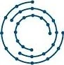
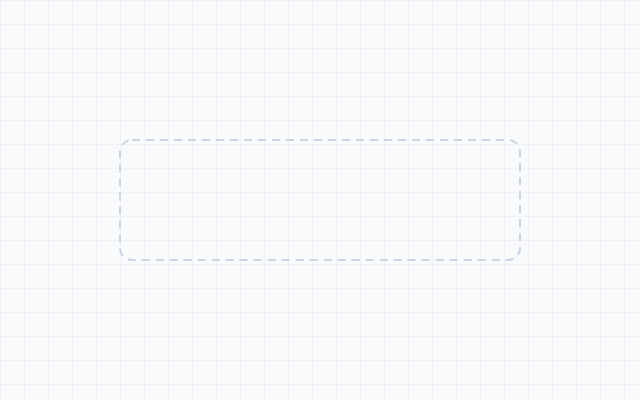

Career
Experience
My path into robotics was not a straight line, and I have stopped apologising for that. Electronics and instrumentation taught me control theory before I ever wrote a ROS node. Two years at ThoughtWorks taught me how software actually ships — VR one quarter, Terraform pipelines the next. A year managing a building site taught me that a schedule is a technical document.
Then the master's at Buffalo, a research post building simulation-first rovers, and now the job that has taught me the most: keeping a real autonomous fleet alive on a campus where nothing is a controlled environment.
What carried over
Diagnostics from Amazon support. Delivery discipline from ThoughtWorks. Coordinating contractors turns out to be good practice for coordinating a fleet, a vendor and a firmware rollout in the same week.
Robotics Operations & Maintenance Analyst
Robot.com
Sep 2026 — Present · Autonomous fleet operations
- Primary campus operations lead, overseeing daily fleet deployment, inventory and partner integrations while delivering fleet performance reporting.
- Managed parts procurement and cellular card tracking logs to keep network connectivity and supply chain continuity.
- Monitored fleet performance through telemetry dashboards and the Linux CLI, running remote middleware interventions and root-cause analysis on connectivity dropouts.
- Carried out on-site hardware interventions, component overhauls, sensor calibrations and OTA deployments across edge devices, reading console logs to isolate failure modes.
- Linux
- Fleet Telemetry
- Hardware Diagnostics
- OTA Updates
- Field Operations
- Current
Software Developer (Volunteer)
Community Dreams Foundation
Nov 2025 — Aug 2026 · UAV simulation pipelines
- Built simulation pipelines for the foundation's UAV in Gazebo and ROS, so flights could be rehearsed and sensor payloads validated before anything went airborne.
- Modelled the airframe and its sensors in simulation, and wired the telemetry path through to the ground station.
- Supported UAV-based air quality monitoring, including sensor setup and data collection.
- Assisted with mission preparation and flight checks, and reviewed collected telemetry for reporting.
- Gazebo
- ROS
- UAV
- MAVLink
- Telemetry
- AQI
Research Assistant
WINGS Lab, SUNY Buffalo
Jan 2025 — Jul 2025 · Simulation-first autonomous rovers
- Developed ROS 2 autonomous rover systems with a simulation-first approach, integrating Gazebo, RViz, ros2_control and Nav2 for navigation and control.
- Designed a dashboard for supervisory control and monitoring, covering teleoperation, rover and arm interaction, and real-time visualisation of robot state and sensor data.
- Ran system-level experiments on navigation robustness, localisation accuracy, communication reliability and safety in simulated missions.
- ROS 2
- Gazebo
- Nav2
- ros2_control
Software Developer
ThoughtWorks Technologies
Oct 2022 — Dec 2023 · VR, front-end and infrastructure
- VR POC, Innovation Labs: immersive VR environments for fashion retail in Unity3D and Blender, with Three.js interaction, deployed to Meta Oculus Quest 2.
- Polaris: a responsive React front-end for an internal asset tracking system.
- Catalyst: automated deployment pipelines in Terraform and Azure DevOps, with Argo CD explored for continuous deployment.
- Crop Recommendation Engine: led a team building an ML engine using SVM, KNN and Naïve Bayes, aimed at underprivileged farmers.
- Unity3D
- React
- Terraform
- Azure DevOps

Software Developer (Intern)
Innodatatics
Jan 2022 — Apr 2022 · Recommendation systems
- Built a personalised job recommendation system using collaborative filtering and scikit-learn.
- Visualised market trends with Matplotlib and Seaborn.
- Wrapped the model in a Flask web interface.
- scikit-learn
- Matplotlib
- Seaborn
- Flask
Project Manager
Casa De Aura
Jan 2020 — Dec 2021 · Family real estate venture
- Managed end-to-end execution of a residential development, coordinating electricians, builders and plumbing teams.
- Oversaw approvals, permits, vendor onboarding, budgeting and scheduling under local regulation.
- Led sales coordination and client interaction, bridging technical execution and business need.
- Project Management
- Vendor Coordination
- Regulatory Compliance
Device & Alexa Support Associate
Amazon Development Centre
Sep 2019 — Dec 2019 · Multi-tier technical support
- Delivered multi-tier support for Alexa-enabled devices, diagnosing hardware, software and connectivity faults.
- Ran root cause analysis on recurring problems, improving resolution efficiency.
- Support
- Diagnostics
- RCA
Freelance Web Developer
3dotsfarm
Apr 2026 — Jul 2026 · Farmstay site, rural Maharashtra
- Designed and shipped the public site for a working farmstay, covering stays, workshops, farm produce, recipes and a blog.
- Built the booking system end to end — a validated date-range request form backed by an authenticated API route, so enquiries reach the owners directly instead of a platform taking a commission per stay.
- Built in Next.js App Router with server components and Tailwind, deployed on Vercel; a keyed asset route lets the owners swap seasonal photography without a redeploy.
- Tuned the image pipeline and responsive layout for a photo-heavy site — optimised formats and lazy loading below the fold, so the galleries do not cost the first paint.
- Next.js
- React
- Tailwind
- API Routes
- Vercel
- Freelance

Founder
Boids
2026 — Present · Early stage
- Early stage, and quiet about it for now. Details once it stops falling over.
- In the making